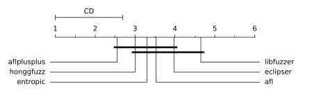
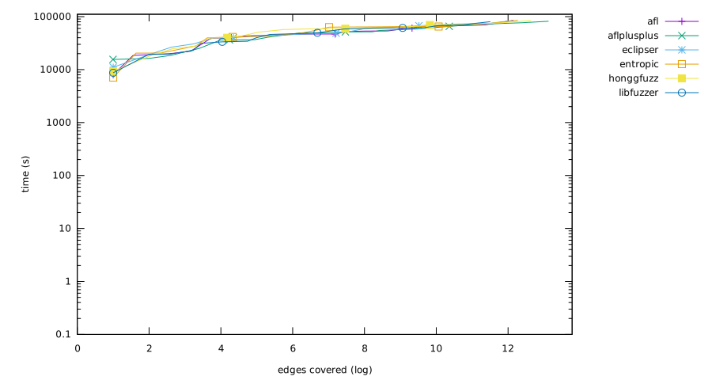
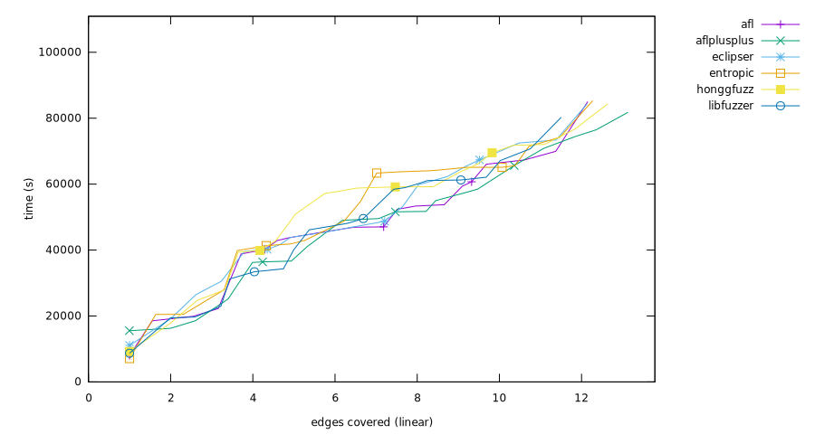
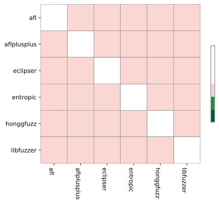

Experiment result
Critical difference

| Fuzzer | Rank |
|---|
| aflplusplus | 2.55 |
| honggfuzz | 3.00 |
| entropic | 3.30 |
| afl | 3.50 |
| eclipser | 4.00 |
| libfuzzer | 4.65 |
Overall (ranking by edges covered)
- aflplusplus (13.127956249233183 edges covered)
- honggfuzz (12.63785737125341 edges covered)
- entropic (12.271740181236815 edges covered)
- afl (12.149496940469955 edges covered)
- eclipser (12.136347604054063 edges covered)
- libfuzzer (11.504684366303842 edges covered)


bloaty_fuzz_target
Ranking
- afl, (0.3595629533619847 => 31,625/87,954 edges covered, total time 66,060s)
- honggfuzz, (0.35651590604179456 => 31,357/87,954 edges covered, total time 69,540s)
- eclipser, (0.3549696432225936 => 31,221/87,954 edges covered, total time 67,380s)
- entropic, (0.3156877458671578 => 27,766/87,954 edges covered, total time 65,580s)
- libfuzzer, (0.27147145098574255 => 23,877/87,954 edges covered, total time 58,920s)
- aflplusplus, (0.24740205107215135 => 21,760/87,954 edges covered, total time 36,420s)
curl_curl_fuzzer_http
Ranking
- aflplusplus, (0.5249919460758804 => 63,555/121,059 edges covered, total time 58,440s)
- afl, (0.44142112523645494 => 53,438/121,059 edges covered, total time 53,340s)
- honggfuzz, (0.4313186132381731 => 52,215/121,059 edges covered, total time 66,060s)
- eclipser, (0.4305421323486895 => 52,121/121,059 edges covered, total time 53,100s)
- entropic, (0.4000198250439868 => 48,426/121,059 edges covered, total time 54,720s)
- libfuzzer, (0.3817973054461048 => 46,220/121,059 edges covered, total time 49,560s)
freetype2-2017
Ranking
- honggfuzz, (0.5158828399747514 => 62,931/121,987 edges covered, total time 71,760s)
- aflplusplus, (0.5082262864075681 => 61,997/121,987 edges covered, total time 76,500s)
- eclipser, (0.43139023010648675 => 52,624/121,987 edges covered, total time 65,280s)
- libfuzzer, (0.3392410666710387 => 41,383/121,987 edges covered, total time 67,140s)
- entropic, (0.3386180494642872 => 41,307/121,987 edges covered, total time 71,460s)
- afl, (0.33184683613827703 => 40,481/121,987 edges covered, total time 52,380s)
harfbuzz-1.3.2
Ranking
- aflplusplus, (0.7700480552635531 => 61,533/79,908 edges covered, total time 74,460s)
- honggfuzz, (0.7422911348050257 => 59,315/79,908 edges covered, total time 76,740s)
- afl, (0.7015693047004055 => 56,061/79,908 edges covered, total time 53,760s)
- eclipser, (0.7009811282975422 => 56,014/79,908 edges covered, total time 62,280s)
- entropic, (0.642789207588727 => 51,364/79,908 edges covered, total time 65,100s)
- libfuzzer, (0.617347449567002 => 49,331/79,908 edges covered, total time 62,100s)
jsoncpp_jsoncpp_fuzzer
Ranking
- entropic, (1.0 => 9,196/9,196 edges covered, total time 7,080s)
- afl, (0.9997825141365811 => 9,194/9,196 edges covered, total time 8,040s)
- eclipser, (0.9997825141365811 => 9,194/9,196 edges covered, total time 11,100s)
- honggfuzz, (0.9994562853414528 => 9,191/9,196 edges covered, total time 9,240s)
- libfuzzer, (0.9993475424097433 => 9,190/9,196 edges covered, total time 8,700s)
- aflplusplus, (0.9944541104828186 => 9,145/9,196 edges covered, total time 15,540s)
lcms-2017-03-21
Ranking
- aflplusplus, (0.485971919921548 => 20,318/41,809 edges covered, total time 56,640s)
- honggfuzz, (0.45624147910736923 => 19,075/41,809 edges covered, total time 62,400s)
- afl, (0.44131646296252003 => 18,451/41,809 edges covered, total time 59,400s)
- entropic, (0.3958477839699586 => 16,550/41,809 edges covered, total time 63,360s)
- eclipser, (0.39106412494917364 => 16,350/41,809 edges covered, total time 59,820s)
- libfuzzer, (0.32368628764141694 => 13,533/41,809 edges covered, total time 60,120s)
libjpeg-turbo-07-2017
Ranking
- aflplusplus, (0.6978646976651367 => 24,479/35,077 edges covered, total time 36,660s)
- afl, (0.5766456652507341 => 20,227/35,077 edges covered, total time 40,200s)
- eclipser, (0.566182968896998 => 19,860/35,077 edges covered, total time 39,600s)
- entropic, (0.5378738204521482 => 18,867/35,077 edges covered, total time 63,720s)
- honggfuzz, (0.48208227613535937 => 16,910/35,077 edges covered, total time 50,940s)
- libfuzzer, (0.37694215582860563 => 13,222/35,077 edges covered, total time 46,140s)
libpcap_fuzz_both
Ranking
- aflplusplus, (0.856320859261785 => 40,182/46,924 edges covered, total time 49,020s)
- honggfuzz, (0.7892123433637371 => 37,033/46,924 edges covered, total time 58,800s)
- entropic, (0.7784289489387094 => 36,527/46,924 edges covered, total time 64,080s)
- libfuzzer, (0.7371920552382576 => 34,592/46,924 edges covered, total time 58,440s)
- eclipser, (0.7319069133066235 => 34,344/46,924 edges covered, total time 48,720s)
- afl, (0.731331514789873 => 34,317/46,924 edges covered, total time 47,040s)
libpng-1.2.56
Ranking
- aflplusplus, (0.7969243860928762 => 13,111/16,452 edges covered, total time 25,140s)
- entropic, (0.6760272307318259 => 11,122/16,452 edges covered, total time 20,520s)
- honggfuzz, (0.6697665937272064 => 11,019/16,452 edges covered, total time 27,960s)
- libfuzzer, (0.6341478239727693 => 10,433/16,452 edges covered, total time 22,980s)
- eclipser, (0.6148188670070508 => 10,115/16,452 edges covered, total time 30,540s)
- afl, (0.6049720398735716 => 9,953/16,452 edges covered, total time 22,260s)
libxml2-v2.9.2
Ranking
- honggfuzz, (0.925667855263927 => 79,177/85,535 edges covered, total time 59,220s)
- afl, (0.9198924416905361 => 78,683/85,535 edges covered, total time 67,320s)
- eclipser, (0.9011398842579061 => 77,079/85,535 edges covered, total time 73,380s)
- aflplusplus, (0.8971532121353831 => 76,738/85,535 edges covered, total time 65,640s)
- entropic, (0.8528321739638745 => 72,947/85,535 edges covered, total time 65,100s)
- libfuzzer, (0.815023089963173 => 69,713/85,535 edges covered, total time 61,260s)
libxslt_xpath
Ranking
- aflplusplus, (0.7486878756780531 => 51,068/68,210 edges covered, total time 51,720s)
- afl, (0.7157601524703122 => 48,822/68,210 edges covered, total time 45,240s)
- eclipser, (0.7116258613106583 => 48,540/68,210 edges covered, total time 47,100s)
- libfuzzer, (0.7060988124908372 => 48,163/68,210 edges covered, total time 34,320s)
- honggfuzz, (0.7060255094560914 => 48,158/68,210 edges covered, total time 57,120s)
- entropic, (0.704251576015247 => 48,037/68,210 edges covered, total time 41,340s)
mbedtls_fuzz_dtlsclient
Ranking
- aflplusplus, (0.4049297316229587 => 9,249/22,841 edges covered, total time 51,600s)
- honggfuzz, (0.38356464252878597 => 8,761/22,841 edges covered, total time 42,840s)
- entropic, (0.34074690249989054 => 7,783/22,841 edges covered, total time 42,960s)
- eclipser, (0.306685346525984 => 7,005/22,841 edges covered, total time 41,640s)
- afl, (0.30270128278096403 => 6,914/22,841 edges covered, total time 42,900s)
- libfuzzer, (0.25139004421872946 => 5,742/22,841 edges covered, total time 40,080s)
openssl_x509
Ranking
- entropic, (0.23889516711971737 => 23,465/98,223 edges covered, total time 64,320s)
- aflplusplus, (0.23695061238202864 => 23,274/98,223 edges covered, total time 55,020s)
- libfuzzer, (0.22773688443643547 => 22,369/98,223 edges covered, total time 61,080s)
- afl, (0.22570070146503365 => 22,169/98,223 edges covered, total time 60,720s)
- eclipser, (0.20004479602537084 => 19,649/98,223 edges covered, total time 68,400s)
- honggfuzz, (0.18733901428382355 => 18,401/98,223 edges covered, total time 63,660s)
openthread-2019-12-23
Ranking
- entropic, (0.6016008987501755 => 17,136/28,484 edges covered, total time 41,880s)
- libfuzzer, (0.5993189158826008 => 17,071/28,484 edges covered, total time 33,420s)
- aflplusplus, (0.5942634461452043 => 16,927/28,484 edges covered, total time 36,240s)
- afl, (0.5570846791181014 => 15,868/28,484 edges covered, total time 38,820s)
- eclipser, (0.5499929785142537 => 15,666/28,484 edges covered, total time 40,200s)
- honggfuzz, (0.5295955624210082 => 15,085/28,484 edges covered, total time 39,900s)
php_php-fuzz-parser
Ranking
- entropic, (0.799854859969491 => 108,014/135,042 edges covered, total time 85,320s)
- honggfuzz, (0.7967150960441937 => 107,590/135,042 edges covered, total time 84,360s)
- afl, (0.7771508123398646 => 104,948/135,042 edges covered, total time 85,020s)
- aflplusplus, (0.769871595503621 => 103,965/135,042 edges covered, total time 81,780s)
- eclipser, (0.7575272878067564 => 102,298/135,042 edges covered, total time 84,360s)
- libfuzzer, (0.7502258556597207 => 101,312/135,042 edges covered, total time 80,280s)
proj4-2017-08-14
Ranking
- entropic, (0.9496715348281666 => 17,492/18,419 edges covered, total time 48,780s)
- libfuzzer, (0.9347955915087681 => 17,218/18,419 edges covered, total time 48,120s)
- honggfuzz, (0.9299636245181606 => 17,129/18,419 edges covered, total time 59,160s)
- aflplusplus, (0.8841413757532982 => 16,285/18,419 edges covered, total time 49,560s)
- afl, (0.8537379879472284 => 15,725/18,419 edges covered, total time 46,920s)
- eclipser, (0.8433139692708617 => 15,533/18,419 edges covered, total time 45,420s)
re2-2014-12-09
Ranking
- aflplusplus, (0.9980637987884364 => 52,063/52,164 edges covered, total time 16,260s)
- libfuzzer, (0.997833755080132 => 52,051/52,164 edges covered, total time 19,440s)
- afl, (0.9978145847711065 => 52,050/52,164 edges covered, total time 19,920s)
- eclipser, (0.9975270301357257 => 52,035/52,164 edges covered, total time 19,140s)
- honggfuzz, (0.9969710911739897 => 52,006/52,164 edges covered, total time 17,820s)
- entropic, (0.9874242772793498 => 51,508/52,164 edges covered, total time 27,960s)
sqlite3_ossfuzz
Ranking
- afl, (0.767886931495298 => 167,556/218,204 edges covered, total time 69,960s)
- eclipser, (0.7604764348957856 => 165,939/218,204 edges covered, total time 72,480s)
- honggfuzz, (0.7601373027075581 => 165,865/218,204 edges covered, total time 72,060s)
- entropic, (0.7521585305493942 => 164,124/218,204 edges covered, total time 74,220s)
- libfuzzer, (0.7339507983355026 => 160,151/218,204 edges covered, total time 70,740s)
- aflplusplus, (0.7187540100089824 => 156,835/218,204 edges covered, total time 70,860s)
systemd_fuzz-link-parser
Ranking
- honggfuzz, (0.6491552881277483 => 2,805/4,321 edges covered, total time 24,720s)
- entropic, (0.6366581809766257 => 2,751/4,321 edges covered, total time 20,460s)
- eclipser, (0.6209210830826197 => 2,683/4,321 edges covered, total time 26,520s)
- aflplusplus, (0.6074982642906734 => 2,625/4,321 edges covered, total time 18,540s)
- libfuzzer, (0.5929183059476973 => 2,562/4,321 edges covered, total time 19,680s)
- afl, (0.5545012728535061 => 2,396/4,321 edges covered, total time 18,540s)
vorbis-2017-12-11
Ranking
- aflplusplus, (0.3854380146812237 => 10,344/26,837 edges covered, total time 41,040s)
- honggfuzz, (0.3299549129932556 => 8,855/26,837 edges covered, total time 39,360s)
- entropic, (0.3223534672280806 => 8,651/26,837 edges covered, total time 39,840s)
- afl, (0.2888176770876029 => 7,751/26,837 edges covered, total time 43,740s)
- eclipser, (0.26545440995640346 => 7,124/26,837 edges covered, total time 43,860s)
- libfuzzer, (0.21421917501956256 => 5,749/26,837 edges covered, total time 31,260s)